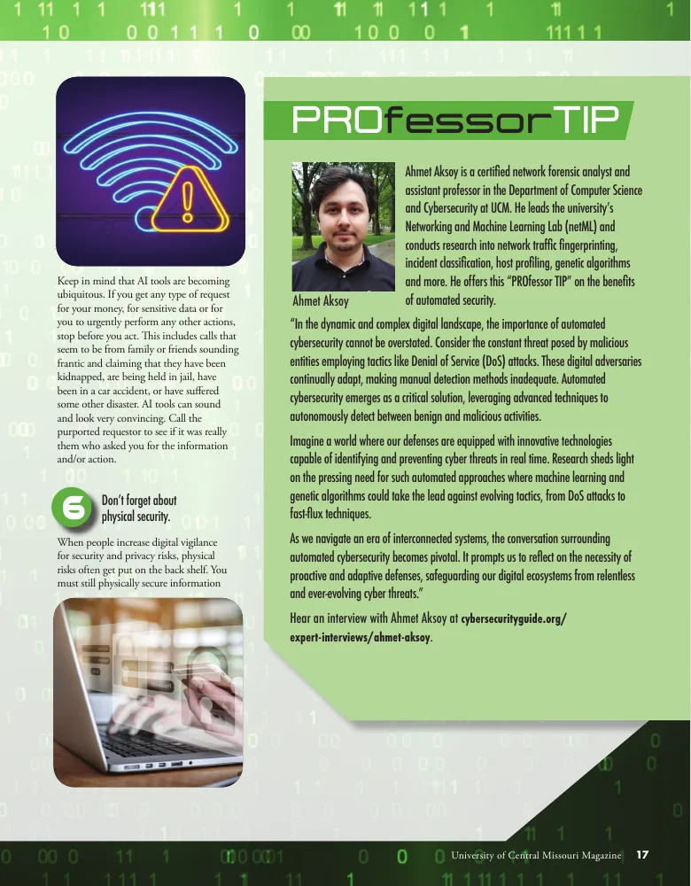

LLMs for cybersecurity
We investigate LLMs for adaptive security systems, including IoT fingerprinting, incident classification, and honeypots. We also study long-context retrieval-augmented generation and adaptive context pruning.
Research at NetML
We build AI methods for network security and efficient language-model systems: detecting threats, identifying devices, reducing noisy features, and making retrieved context more useful to LLMs.
Our focus
Our projects connect network measurement, optimization, and language models to practical problems.
We investigate LLMs for adaptive security systems, including IoT fingerprinting, incident classification, and honeypots. We also study long-context retrieval-augmented generation and adaptive context pruning.
We reduce redundancy in high-dimensional security telemetry while preserving classification performance. Genetic algorithms, Artificial Bee Colony optimization, feature selection, quantization, and SHAP help us refine models and explain their decisions.
We identify devices, operating systems, and hosts from protocol headers and encrypted SSL/TLS metadata. Our work studies compact traffic representations, passive identification, and the robustness of multi-protocol fingerprinting.
We develop frameworks that analyze packet-level telemetry for DNS botnets, DoS attacks, fast-flux networks, and OS scanning activity. Search-based feature selection and machine learning help uncover useful header-level representations.
Selected research
Four studies show how the lab works across efficient language models, cyber deception, device identification, and network threat detection.
Long-context AI · 2026
JMAP: Joint Multi-Document Attention with Clustering-Based Adaptive Context Pruning for Retrieval-Augmented Generation
A 149M-parameter ModernBERT-base cross-encoder scores sentences across retrieved documents in one 8,192-token pass. Clustering sets an adaptive threshold to preserve evidence while removing distracting text.
On HotpotQA, 2WikiMultihopQA, MuSiQue, and TriviaQA, pruned context improved Qwen3-8B answer F1 over unpruned context in the paper's evaluation.
Adaptive cyber deception · 2026
An LLM-Driven Adaptive Honeypot Testbed for Dynamic Intrusion Engagement
This healthcare-domain prototype generates context-aware pages from a pool of LLMs. Semantic checks keep responses consistent as an interaction unfolds, targeting manual exploration and post-exploitation rather than automated reconnaissance.
Graduate researchers tested benign and adversarial interactions in controlled Chameleon Cloud simulations to examine feasibility, interaction depth, and content quality.
IoT identification · 2025
Automated IoT Fingerprinting with LLMs: Harnessing Explainable AI and Artificial Bee Colony Optimization
The method analyzes network packets, then uses SHAP and Artificial Bee Colony optimization to select relevant features before an LLM classifies IoT devices.
Network threat detection · 2024
Automated Network Incident Identification through Genetic Algorithm-Driven Feature Selection
Genetic algorithms select packet-level features for machine-learning detection of DNS botnets, Nmap OS scanning, and DoS HULK and GoldenEye attacks without manual feature selection.
Selected projects
Open-source frameworks make our methods available for others to explore and extend.
Open-source research framework
Automated network traffic analysis and feature optimization
AutoIC is an open-source research framework for extracting features from network traffic, applying machine learning, optimizing features with genetic algorithms, and explaining model behavior with SHAP and LIME.
Research appearances
An interview, presentation, and features from UCM Magazine and Chameleon Cloud share the ideas behind our research.
A conversation on cybersecurity research and the lab's interdisciplinary approach.
Machine learning and genetic algorithms for detecting fast-flux networks.

Spring 2024 · Page 17
Dr. Aksoy discusses automated cybersecurity and how machine learning and genetic algorithms can help identify evolving network threats.
Read the magazine feature (PDF)May 23, 2022
Dr. Aksoy explains the lab's automated fast-flux detection research and how Chameleon Cloud supported computationally intensive genetic algorithm experiments.
Read the Chameleon Cloud featureCollaborate
We welcome students and collaborators interested in machine learning, LLMs, networking, and cybersecurity.
Get in touch